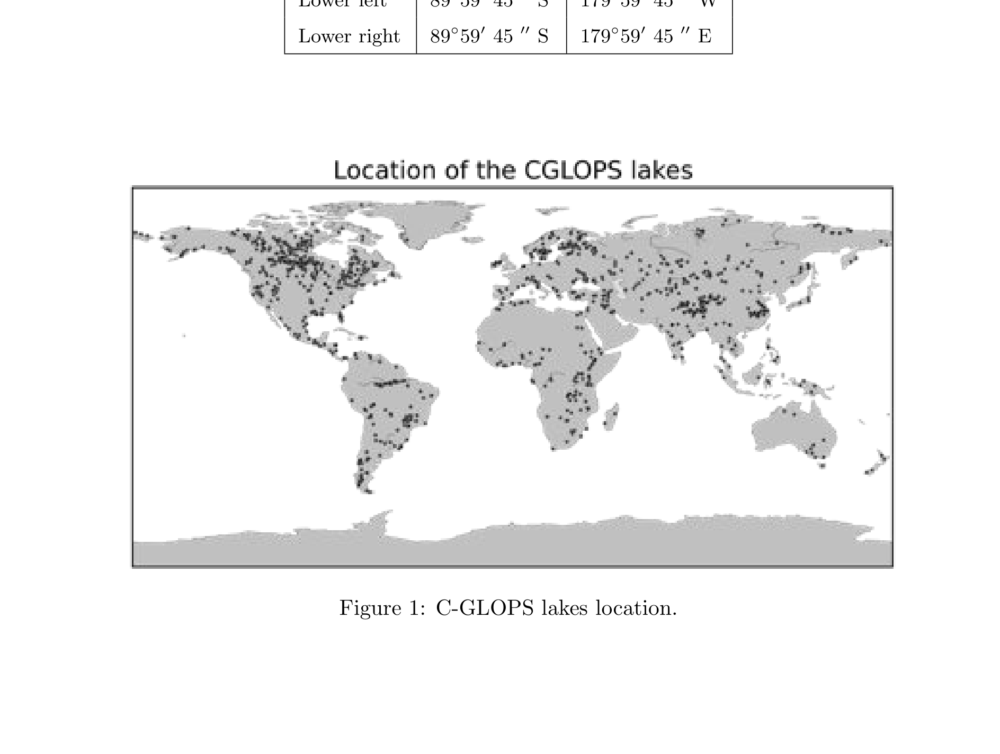

PRODUCT USER MANUAL LAKE SURFACE WATER TEMPERATURE 1KM PRODUCTS
Copernicus Global Land Operations Cryosphere and Water C-GLOPS2 Framework Service Contract N 199496 (JRC)
Lake Surface Water Temperature, Sentinel-3 SLSTR, AATSR instrument, Optimal Estimation, inland water bodies, 10-day composite, 1/120 degree spatial resolution, water detection algorithm, LSWT uncertainty, global lake monitoring
Contact:
European Environment Agency (EEA)
Kongens Nytorv 6
1050 Copenhagen K
Denmark
https://land.copernicus.eu/
Dissemination Level
Document Release Sheet
| PU | Public | X |
| PP | Restricted to other programme participants (including the Commission Services) | |
| RE | Restricted to a group specified by the consortium (including the Commission Services) | |
| CO | Confidential, only for members of the consortium (including the Commission Services) | |
| — | — | — |
| Book Captain: | Laura Carrea (University of Reading) | Sign |
| Approval: | Sign | |
| Endorsement: | Sign | |
| Distribution: | Public |
1 Change Record
Change Record
| Issue/Rev | Date | Page(s) | Description of Change | Release |
|---|---|---|---|---|
| I1.01: | 26.06.2018 | 18 | First Version for PUM Lake Surface Water Temperature products Version 1.1.0 | |
| I1.02: | 09.11.2017 | 18 | Internal review | |
| I1.03: | 27.06.2018 | 21 | Internal review | |
| I1.04: | 26.06.2018 | 21 | Internal review | |
| I1.05: | 22.03.2019 | 21 | Corrections according to Review 4 | |
| I1.06: | 22.05.2019 | 20 | Final minor corrections according to Review 4 | |
| I1.07: | 30.11.2019 | 20 | Inclusion of the validation of the LSWT product from Sentinel-3A SLSTR instrument. Update of the C-GLOPS website link at the University of Reading. Introduction of SLSTR-A LSWT v1.0.2 for reprocessed data. | |
| I1.08: | 22.04.2020 | 20 | Inclusion of the LSWT product from Sentinel-3A and Sentinel-3B SLSTR instruments. | |
| I1.09: | 15.08.2020 | 22 | Inclusion of the LSWT product from Sentinel-3A and Sentinel-3B SLSTR instruments and the reprocessed SLSTR-A LSWT product. |
2 Acronyms
AATRS Advanced Along-Track Scanning Radiometer.
ARC ATSR Reprocessing for Climate.
ATBD Algorithm Theoretical Basis Document.
BT Brightness Temperature.
C-GLOPS Copernicus Global Land Operations.
CCI Climate Change Initiative.
ECV Essential Climate Variable.
ESA European Space Agency.
GHRSST Group for High Resolution SST.
GLWD Global Lakes and Wetlands Database.
LSWT Lake Surface Water Temperature.
MAP Maximum Aposteriori Probability.
MERIS MEdium Resolution Imaging Spectometer.
NIR Near-InfraRed.
NRT Near Real Time.
NWP Numerical Weather Prediction.
OE Optimal Estimation.
PML Plymouth Marine Laboratory.
PUM Product User Manual.
QAR Quality Assessment Report.
RTM Radiative Transfer Model.
SLSTR Sea and Land Surface Temperature Radiometer.
SLSTRA Sentinel-3A Sea and Land Surface Temperature Radiometer.
SST Sea Surface Tempertaure.
SWIR Short-Wave-InfraRed.
TCWV Total Column Water Vapour.
VIS Visible.
WGS84 World Geodetic System 1984.
3 General definitions
L2P Geophysical variables derived from Level 1 source data on the Level 1 grid (typically the satellite swath projection). Ancillary data and metadata added following the Group for High Resolution SST (GHRSST) Data Specification.
L3U L2 data granules remapped to a regular latitude/longitude grid without combining observations from multiple source files. L3U files will typically be sparse, corresponding to a single satellite orbit.
L3C LSWT observations from a single instrument combined into a space-time grid. In this project, a typical L3C file may contain all the observations from a single instrument in a 24-hour period.
4 Background of the document
4.1 Executive summary
The C-GLOPS Lake Water provides an optical and thermal characterization of nominally 1000 inland water bodies (listed in the Algorithm Theoretical Basis Document (ATBD)) that belong to the world’s largest (according to the Global Lakes and Wetlands Database Global Lakes and Wetlands Database (GLWD)) or are otherwise of specific environmental monitoring interest. The products contain four sets of parameters: lake water surface temperature, lake water reflectance (all wavebands that are available after atmospheric correction), turbidity (derived from suspended solids concentration estimates) and a trophic state index (derived from phytoplankton biomass by proxy of chlorophyll-a). Production and delivery of the parameters are over 10-day intervals on a set grid (starting the 1st, 11th and 21st day of each month) and mapped to a common global grid at either nominally 300m (~0.0026°) or 1000m (~0.01°) resolution.
This Product User Manual (PUM) describes the LSWT products based on observations in the visible and infrared by the Advanced Along-Track Scanning Radiometer (AATSR) instrument on Envisat and by the SLSTR-A and Sentinel-3B Sea and Land Surface Temperature Radiometer (SLSTR-A) instruments on Sentinel-3A and Sentinel-3B. Table 1 summarises the C-GLOPS products.
Table 1: C-GLOPS LSWT products.
| Sensor | version | type | period covered |
|---|---|---|---|
| AATSR | v1.0.2 | historical | 11-May-2002 to 01-Apr-2012 |
| SLSTR-A | v1.0.1 | Near Real Time (NRT) | 10-Apr-2018 to 20-Aug-2020 |
| SLSTR-A | v1.0.2 | reprocessed | 01-Jun-2016 to 30-Apr-2020 |
| SLSTR-A + SLSTR-A | v1.1.0 | NRT | 21-Aug-2020 to current |
It also summarizes the validation results of the AATSR C-GLOPS product carried out through comparison with in-situ measurements. The validation of SLSTR-A is performed with a comparison with in-situ measurements for data until the end of 2018. For the NRT LSWT product from SLSTR-A/B a validity check is performed with a comparison with the climatology routinely. This document also summarises the assessment of the reprocessed SLSTR-A LSWT product and the assessment of the new SLSTR-AB C-GLOPS LSWT product reported in details in the Quality Assessment Report (QAR) and in the ATBD.
4.2 Scope and objectives
This document provides an overview on the products provided within the Lake Surface Water Temperature Service. The products follow the specification (CGLOPS2-SSD) of the Global Component of the Copernicus Land Service. The Sea and Land Surface Temperature Radiometer (SLSTR) product is both operationally generated and reprocessed while the AATSR product is a reprocessing of the full archive. They are delivered freely through the Copernicus Global Land portal (http://land.copernicus.vgt.vito.be). The main aim of the document is to help users in selecting the data products they require, understanding features and limitations and to then enable them to read and use the data. A summary of how the data were produced is also included.
4.3 Content of the document
This document is structured as follows:
Chapter 2 recalls the users requirements, and the expected performance
Chapter 3 review the retrieval methodology
Chapter 4 describes the technical properties of the product
Chapter 5 summarizes the results of the quality assessment
5 Review of user requirements
According to the applicable document [AD2], the user’s requirements relevant for LSWT are:
Definition The Lake Surface Water Temperature LSWT is defined as the temperature of the water at the surface of the water body (surface skin temperature).
Geometric properties The baseline dataset pixel size shall be provided at a resolution of 1km. The target baseline location accuracy shall be 1/3 of the at-nadir instantaneous field of view. Pixel co-ordinates shall be given for the centre of the pixel.
Geographical coverage The initial window definition is aligned to the global dataset produced during the GIO phase for the most widely used output data:
- geographic projection: lat lon
- geodetical datum: WGS84
- pixel size: 1/120°
- accuracy: min 10 digits
- coordinate position: pixel centre
- global window coordinates: UL: 180W 90N, LR: 180E 90S
Accuracy requirements LSWT is an Essential Climate Variable (ECV) (GCOS-200, 2016) with an associated uncertainty requirement of 1°K.
Temporal Definition As a baseline the physical parameter is computed by and representative of decades, i.e. for ten-day periods a decade is defined as follows: days 1 to 10, days 11 to 20 and days 21 to end of month for each month of the year.
6 Algorithm
The algorithm to derive the LSWT product from imagery of visible and infrared radiometers consists of many components which aim to retrieve the LSWT from the observed reflectances and brightness temperatures for only-water pixels. The core of the algorithm is the retrieval part which is based on Optimal Estimation (OE) given simulations and observations. The other components of the algorithm prepare the inputs for the retrieval part, namely simulate the brightness temperatures and classify a pixel as water or non-water. Finally, the observations are gridded in a regular 1/120° resolution grid and subsequently they are aggregated in time.
6.1 Overview
The core algorithm used for LSWT retrieval is an adaptation of the European Space Agency (ESA) Climate Change Initiative (CCI) Sea Surface Temperature (SST) retrieval algorithm [Merchant and Team, 2017] for lakes developed within the UK-based National Environment Research Council (UK) (NERC) GloboLakes project. It comprises the following conceptual steps:
Preparatory processing This includes orbit file reading, validity checks, association of auxiliary information to the orbit file being processed, and any pre-processing adjustment to the data themselves.
Classification It identifies valid pixels for LSWT retrieval. Although sometimes referred to as cloud detection, this also involves identifying which image pixels cover only lake water.
Retrieval of LSWT (geophysical inversion) In case of inland water, LSWT is calculated dynamically given prior information with OE. Estimation of the retrieval uncertainty at pixel level is also part of this step. The prime retrieval is of the radiometric temperature of the inland water, which is taken as equivalent to the skin temperature.
Gridding/averaging The algorithm grids the full resolution imagery (L2P) into a L3C daily file. The L3C product is then aggregated in time to generate the C-GLOPS product.
After the preparatory processing, before LSWT retrievals can be made it is first necessary to define the location of each lake, achieved through the use of a land water mask and a water detection algorithm since lakes have generally a dynamic extension. A suitable cloud detection algorithm must then be employed to minimize the effect of cloud contamination in the retrieved LSWT, while at the same time keeping the number of observations incorrectly flagged as cloud to a minimum.
The approach to both cloud detection and LSWT retrieval in the CCI SST processor is physics and it depends on forward modelling of clear-sky infrared observations. Such modelling requires, as input, data describing the state of the atmosphere and the surface.
Some of these data are lake-specific, in particular the prior surface temperature and the lake surface emissivity and they will be discussed in details.
In particular, it has been found that Numerical Weather Prediction (NWP)-based values are not (at present) sufficiently accurate for this purpose [MacCallum and Merchant, 2013]. Therefore, an alternative source for these values needs to be identified. The prior surface temperature is generated in form of a spatially-completed daily climatology using a modification of the CCI SST retrieval algorithm. The climatology will be stored in the prior surface temperature variable within the retrieval algorithm through a look-up in the pre-processing phase.
Moreover, since the performance of the CCI cloud detection (Bayesian) depends on how accurate the prior surface temperature is, in the process of creation of a suitable prior we attempted a classification of water pixels which does not rely on the Bayesian cloud detection and therefore on an accurate prior. The water pixel classification and the generation of the prior surface temperature will be discussed in details in this document.
The emissivity algorithm involves interpolation of fresh and saline water emissivity according to the nature of any given lake.
The adaptations of the CCI SST processor for lakes are related to the following aspects:
accurate land water mask for inland water
water detection algorithm in presence of clouds
prior lake surface water temperature
lake surface emissivity
A summary of the main algorithms involved in the generation of the 10-day C-GLOPS LSWT products is reported in the following subsections.
6.1.1 Lake Surface Water Temperature retrieval
The LSWT is estimated for each (clear-sky) water pixel using joint optimal estimation OE [MacCallum and Merchant, 2012] of surface temperature and Total Column Water Vapour (TCWV) given the simulations and observations. The form of OE used is to return the Maximum A-posteriori Probability (MAP) assuming Gaussian error characteristics. OE also gives an uncertainty estimate for each retrieval.
6.1.2 Lake-specific inputs to radiative transfer modelling (simulation)
The LSWT retrieval algorithm is based on radiative transfer modelling. The algorithm is generic with respect to what choice of Radiative Transfer Model (RTM) is applied, as long as appropriate simulations of Brightness Temperature (BT) and visible reflectance can be made. In addition, the Jacobian (derivative of BT) is required with respect to prior surface temperature and prior TCWV; any radiative transfer model that simulates BT can provide the Jacobians by perturbation if it does not directly output them. Thus, discussion of the RTM as such is properly outside the scope of this document. Likewise, the algorithm is generic with respect to the origin of the profiles of atmospheric temperature and water vapour that are required to run the RTM: the sourcing of such numerical weather prediction NWP fields for a given location and observation is a generic process for which any implementer of the retrieval algorithm will have a preferred local solution. However, the sourcing of the prior surface temperature, and the lake surface emissivity, e, are also required, and we have found that NWP-based values for these are not (at present) sufficiently accurate for this purpose. Therefore, they need to be specified by an algorithm, presented here.
6.1.3 Classification
Valid LSWT can be estimated only for pixels that are effectively water and free of cloud. The algorithm for the discrimination of water and non-water pixels in presence of clouds is based on threshold tests on the Visible (VIS), Near-InfraRed (NIR), and Short-Wave-InfraRed (SWIR) channels of the AATSR and SLSTR-A/B instruments. The thresholds to detect water in presence of clouds have been defined starting from the thresholds to detect water proposed within the ATSR Reprocessing for Climate (ARC) Lake project [MacCallum and Merchant, 2013]. These thresholds have been then tuned according the probability of clouds over water computed on observations from the MEdium Resolution Imaging Spectrometer (MERIS) instrument on Envisat like the AATSR instrument. The probability of clouds have been computed by the Plymouth Marine Laboratory (PML) with the method in [Schiller et al., Sept. 2008] within the GloboLakes project. Importantly, at this stage the water detection algorithm has been applied only to inland-water pixels in the water bodies identifier mask [Carrea et al., 2015] built from the ESA CCI Land Cover Project.
6.1.4 Gridding
The LSWT product is required on a 1/120° latitude-longitude grid, and thus a gridding algorithm is specified to take the observations from the imagery resolution to the product resolution. The gridding algorithm is based on the nearest neighbour scheme. The single orbit files are combined into a space grid to obtain a daily L3C file.
6.1.5 Temporal aggregation
The LSWT product is required on a 10-day basis. The temporal aggregation of the observations is performed as a weighted average according to weights related to the uncertainties and the quality of the observations. The average is performed on the anomalies with respect to a 20-year base. The temporal aggregation of the uncertainties is carried out using a technique which take into account the error covariance matrix estimated through the available observations.
6.2 Limitations of the product
The most crucial assumption is related to the water detection algorithm which is used to detect water in presence of clouds. The algorithm relies on threshold tests which are applied to visible channels and combinations. Since the spectral properties at the measured wavelengths vary, lakes are optically diverse. Consequently, the thresholds depend on water type and each threshold may be different for each water type. Also, the thresholds depend on wind and satellite zenith angle and false positives can be introduced by cloud/mountain shadowing. In this version of the water detection algorithm one threshold for all the lakes has been derived and utilised. As a result some water pixels may have not been detected as water and more importantly some cloud/land contaminated pixels may have been included in the set of pixel where the retrieval has been applied. The \(\chi^2\) test on the retrieval (see ATBD) which has been used to derive the quality levels may have been of help in those cases. The performance of the water detection is captured in a water detection score which is used together with \(\chi^2\) and other parameters) to set the value of the quality levels. They range from 2 (worst quality) to 5 (best quality). We recommend to use ideally LSWT only with quality levels 4 and 5 where the confidence of the results is the highest. LSWT of quality levels = 3,2 should be used with care.
7 Product description
7.1 The C-GLOPS products
Currently, the C-GLOPS product consists of three types of data: historical, reprocessed and NRT. The dataset available for day-time are (see also Table 1):
AATSR LSWT (v1.0.2) starting in May 2002 and continuing through April 2012 (historical data)
SLSTR-A reprocessed LSWT (v1.0.2) starting on the 01-Nov-2016 until 10-Apr-2018. This reprocessing was performed because of problems in the SLSTR-A ground segment related to the NWP fields. The L1b files used for product were all Non-Time-Critical and the set of L1b files used was complete
SLSTR-A reprocessed LSWT (v1.0.2) starting on the 11-Apr-2018 until 30-Apr-2020. The L1b files used for the product are Non-Time-Critical and all the L1b data were available at the time of processing. An evaluation of the benefit of regular reprocessing is reported in the QAR.
SLSTR-A NRT LSWT (v1.0.1) starting on the 11-Apr-2018 until current time (NRT data). The L1b files used for the product are partly Non-Time-Critical and party Near-Real-Time. Moreover, not necessarily all the L1b data were available at the time of processing.
SLSTR-AB NRT LSWT (v1.1.0) is planned to start on the 21-Aug-2020. The L1b files used for the product will be partly Non-Time-Critical and party Near-Real-Time. Moreover, not necessarily all the L1b data were available at the time of processing.
Each file contains one set of LSWT which provides a measure of the 10-day average temperature of the skin of the water for all the in-land water bodies included in C-GLOPS list (see Appendix of ATBD) at 1/120° resolution. Each LSWT has a correspondent uncertainty estimate, a quality level value and the standard deviation of the observations used for the 10-day aggregation.
7.2 File naming
For the Lake Surface Water Temperature Products, the following naming convention is used: c_gls_<Acronym>-<YYYYMMDDHHmm>-<AREA>-<SENSOR>-<Version>.<EXTENSION> where
<Acronym>is the name of the product, which is LSWT.<YYYYMMDDHHmm>gives the temporal location of the file. YYYY, MM, DD denote the year, the month, the day of the product. The day is the first day of the decadal average. Because time is not relevant, HHmm is always set to 0000.<AREA>gives the spatial coverage of the file. In our case,<AREA>is either GLOBE (Table 2).<SENSOR>gives the name of the sensor used to retrieve the product, either AATSR, SLSTR-A or SLSTR-AB.- The
<Version>is- 1.0.2 for historical AATSR data
- 1.0.1 for NRT SLSTR-A data
- 1.0.2 for reprocessed SLSTR-A data
- 1.1.0 for NRT SLSTR-AB data
<EXTENSION>is indicating the file format, which is .nc for the netCDF4 files produced.
Table 2: Naming convention and bounding box for continental subsets
| Short name Continent | Continent | Bounding Box |
|---|---|---|
| GLOBE | global | 180°W 180°E, 90°N 90°S |
Example: c_gls_LSWT_200504010000_GLOBE_AATSR_v1.0.2.nc
7.3 File format
The file format is netCDF CF1.6. The format of each parameter (band) is provided in Table 4.
7.4 Product content
7.4.1 Data file
The dimensions of the product are listed in Table 3 and the variables that are coming with the products are listed in Table 4.
Each variable in the netCDF file has attributes associated with. The most important attributes to be able to read the data are reported in Table 5, where:
- units: The units of the data after applying the scale_factor and add_offset conversion.
- scale_factor: Multiply the data stored in the NetCDF file by this number.
Table 3: Dimensions of the LSWT product
Table 4: Variables in the LSWT product.
| Dimension name | Data type | Description |
|---|---|---|
| lat | float | Latitude |
| lon | float | Longitude |
| time | int | Day at the beginning of the 10 days |
| Variable name | Data type | Description |
| — | — | — |
| lake_surface_water_temperature | short | 10-day aggregated lake surface water temperature |
| lwst_uncertainty | short | Uncertainty of the LSWT obtained from the OE uncertainty propagated through the 10 days taking into account a number of observations < 10 |
| lwst_standard_deviation | short | Standard deviation of the LSWT observations within the 10 days. It is 0 in case of 1 observation only. |
| quality_level | byte | Overall quality indicators |
| n_lswt | byte | Number of observations contributing to the 10-day product |
| time_obs | short | Time of the observations used to build the 10-day C-GLOPS product |
- add_offset: After applying scale_factor, add this to obtain the data in the units specified in the units attribute.
- **_FillValue**: The number put into the data arrays where there are no valid data (before applying the scale_factor and add_offset attributes).
Table 5: Attributes of the variables in the LSWT product.
| units | scale_factor | add_offset | _FillValue | |
|---|---|---|---|---|
| lake_surface_water_temperature | K | 0.01 | 273.15 | -32768 |
| lwst_uncertainty | K | 0.001 | 0 | -32768 |
| lwst_standard_deviation | K | 0.001 | 0 | -32768 |
| quality_level | 0 | |||
| n_lswt | 0 | |||
| time_obs | 0 |
7.5 Product characteristics
7.5.1 Projection and grid information
Global, regional, or water-body specific files in NetCDF4 format, mapped to a global 1/120° grid and including dimensions latitude, longitude (WGS84 projection, EPSG: 4326), and time (seconds since 1981-01-01 00:00:00).
7.5.2 Spatial information
The spatial extension of the global product covers the full globe. The bounding box coordinates of the global product are reported in Table 6. Figure 1 shows the distribution of the C-GLOPS lakes around the globe. The full list of lakes is reported in the ATBD and at the following website http://www.laketemp.net/home_CGLOPS/cglops_targets.php.
Table 6: Bounding box coordinates of the global product.
| Latitude | Longitude | |
|---|---|---|
| Upper left | 89°59′45″N | 179°59′45″W |
| Upper right | 89°59′45″N | 179°59′45″E |
 {fig-alt=“This global map, titled ‘Location of the CGLOPS lakes’ and referred to as ‘Figure 1: C-GLOPS lakes location’, illustrates the distribution of Copernicus Global Lake and Ocean Products and Services (C-GLOPS) lakes worldwide. The continents are rendered in grey, and oceans in white. Individual C-GLOPS lake locations are marked as small black dots across the landmasses. The spatial distribution shows a higher concentration of monitored lakes in North America (particularly Canada and the USA), Europe, central Africa, and parts of Asia. Fewer lakes are visible in South America and Australia. The map includes Antarctica at the bottom. Above the map, a small table provides the bounding box coordinates for the global product: |
Latitude |
7.5.3 Temporal information
The LSWT product (v1.0.1/v1.0.2 for SLSTR-A, v1.1.0 for SLSTR-AB and v1.0.2 for AATSR) is 10-day composite. The temporal information YYYYMMDDHHmm in the filename corresponds to the start date of the 10-daily period. The variable time in the netCDF4 file contains the start date of the 10-day period as seconds since 1981-01-01 00:00:00.
The 10-day averages are always comprising the following days: 1-10, 11-20, 21-end of the month. Therefore, the last period of the month may have between 8 and 11 observation days. In addition to this theoretical time frame, the products contain the temporal information of the actual observations used to construct the 10-day LSWT product. It is in the form of a flag, where the first bit set to 1 implies that the observation on day 1 of the 10-day period was present and used in the temporal aggregation, and so on.
7.5.4 Data policies
Any use of the Lake Surface Water Temperature product implies the obligation to include in any publication or communication using these products the following citation: The products were extracted from land service of Copernicus, the Earth Observation program of the European Commission. The research leading to the current version of the products has received funding from the UK NERC GloboLakes project.
7.5.5 Contacts
Accountable contact: European Commission Directorate General Joint Research Centre, Email address: copernicuslandproducts@jrc.ec.europa.eu
Scientific contact: University of Reading, Email address: c.j.merchant@reading.ac.uk, l.carrea@reading.ac.uk
Production and distribution contact: University of Reading Email address: l.carrea@reading.ac.uk
7.5.6 Sample product
Figures 2 and 3 provide an example of the SLSTR-A LSWT product for the lakes Malawi, Malombe, Chiuta and Chilwa in Malawi for the period starting on the 11-Jun-2018. They show the LSWT, its uncertainty and the number of observations in Figure 2, and the quality levels, the standard deviation and the time of the observations in Figure 3.
Figures 4 and 5 provide an example of the SLSTR-AB LSWT product for the for a glacial lake in Greenland (centre lat=65.087, lon=-50.040, maximum distance from land = 1.8 km) for the 10-day period starting on the 21-Jul-2020 using SLSTR-AB data. They show the LSWT, its uncertainty and the number of observations in Figure 4, and the quality levels, the standard deviation and the time of the observations in Figure 5. Despite the lake is small, the 10-day SLSTR-AB LSWT product has a good number of observations for most of the lake, good values of uncertainty and high quality levels which indicates that the product is very reliable.
![Three choropleth maps display Copernicus Land Monitoring Service (CLMS) data for Lake Malawi, dated 20180611. The maps share a geographical extent, with longitudes from approximately +34° to +35° and latitudes from -10° to -15°. 1. **Left Map: Lake Surface Water Temperature (LSWT)**. The colour scale ranges from purple to yellow, representing LSWT in Kelvin (K). Values range from 292.0 K (purple) to 300.0 K (yellow). Specific scale increments are 292.0, 292.8, 293.6, 294.4, 295.2, 296.0, 296.8, 297.6, 298.4, 299.2, and 300.0 K. The northern and central parts of the lake show warmer temperatures (yellow/orange), while the southern arm displays cooler temperatures (purple/red). 2. **Middle Map: LSWT Uncertainty**. The colour scale ranges from white/light blue to dark green/black, representing LSWT uncertainty in Kelvin (K). Values range from 0.0 K (white/light blue) to 1.0 K (dark green/black). Specific scale increments are 0.0, 0.1, 0.2, 0.3, 0.4, 0.5, 0.6, 0.7, 0.8, 0.9, and 1.0 K. Higher uncertainty (darker colours) is observed in the northern and central areas of the lake, with lower uncertainty (lighter colours) predominantly in the southern parts. 3. **Right Map: Number of observations**. The colour scale ranges from white/light yellow to black/dark red, indicating the number of observations used for the data composite. Values range from 0 (white) to 6 (black). Specific scale increments are 0, 1, 2, 3, 4, 5, and 6. The central and northern areas of the lake generally exhibit higher numbers of observations (up to 6), whereas the southernmost sections have fewer observations (1-2).](products_Product_user_manual_-_Lake_Surface_Water_Temperature_version_1-media/img-bf888966e58a378df19d4f7bba3c6528.png)
![Three choropleth maps of Lake Malawi for the period starting 2018-06-11, depicting Lake Surface Water Temperature (LSWT) Standard Deviation, Quality Levels, and Observation Days used for temporal aggregation. All maps show a geographic area spanning approximately 9°S to 15°S latitude and 34°E to 35°E longitude. 1. **LSWT Standard Deviation (left map):** Shows the standard deviation of Lake Surface Water Temperature in Kelvin (K). The colour scale ranges from 0.0 K (light blue/white) to 2.0 K (dark purple), indicating variability in LSWT. Areas in the northern and central parts of the lake show higher standard deviation (pink/purple), while southern areas tend to have lower values (light blue/white). 2. **Quality levels (middle map):** Displays data quality levels. The colour scale represents four discrete quality levels: 2 (dark purple), 3 (light purple), 4 (light green), and 5 (dark green). The majority of the lake area is covered by quality levels 4 and 5, indicating high data quality, with smaller, scattered regions showing lower quality levels 2 and 3. 3. **Observation days (right map):** Illustrates the combinations of days within the 10-day period (1-10) for which observations were used to construct the LSWT product. The legend lists various combinations of day numbers (e.g., '3+6+7+10', '2+7+10', '7+10', '2+3+5+6+10', '2+3'). These combinations vary spatially across the lake, indicating heterogeneous data availability for temporal aggregation. For instance, the northern tip predominantly shows combinations involving days 7 and 10, while the central and southern parts show a wider mix of days, including combinations like '2+3' at the southern end.](products_Product_user_manual_-_Lake_Surface_Water_Temperature_version_1-media/img-eb22e0ed56791f309b95790efde05efb.png)
![This image displays three choropleth maps side-by-side, illustrating data for an 'NN-Glacial-Lake' region for the period starting 2020-07-21. All maps cover the geographic extent from approximately -50.4° to -49.8° longitude and +64.8° to +65.4° latitude. 1. **Left Map: Lake Surface Water Temperature (LSWT)** * Title: 'NN-Glacial-Lake 20200721' * Data: Lake Surface Water Temperature in Kelvin (K). * Colour scale: A vertical bar ranging from purple (276.5 K) at the bottom to yellow (281.5 K) at the top. * Spatial pattern: Shows clusters of pixels with varying LSWT, generally higher (yellow/orange) in some areas and lower (purple/dark blue) in others, within the observed lake region. 2. **Middle Map: LSWT Uncertainty** * Title: 'Lake NN-Glacial-Lake 20200721' * Data: LSWT Uncertainty in Kelvin (K). * Colour scale: A vertical bar ranging from light blue/green (0.0 K) at the bottom to black (1.0 K) at the top. * Spatial pattern: Areas with observed LSWT also show corresponding uncertainty values, with higher uncertainty (darker colours) distributed across parts of the lake. 3. **Right Map: Number of Observations** * Title: 'Lake NN-Glacial-Lake 20200721' * Data: Number of observations. * Colour scale: A vertical bar ranging from white/light grey (0) at the bottom to red (12) at the top. * Spatial pattern: Indicates the count of individual observations contributing to the 10-day composite LSWT product for each pixel. Areas with higher observation density (darker colours, up to 12 observations) are clustered, while other areas have fewer observations (lighter colours). The maps collectively show the derived Lake Surface Water Temperature, its associated uncertainty, and the underlying data density used to create the 10-day composite product, all within a specific glacial lake region in July 2020.](products_Product_user_manual_-_Lake_Surface_Water_Temperature_version_1-media/img-96ea0ecaa58bdd82a6fcda2aad489d05.png)
![This figure presents three gridded maps showing characteristics of a Lake Surface Water Temperature (LSWT) product for a specific Glacial Lake on 2020-07-21, within the geographic coordinates of approximately -50.4° to -49.8° longitude and +64.8° to +65.4° latitude. 1. **Left Map: LSWT Standard Deviation (K)** This map displays the standard deviation of Lake Surface Water Temperature in Kelvin (K). The colour legend ranges from 0.0 K (dark blue) to 3.0 K (dark red), with intermediate values marked at 0.2 K increments. The pixels indicating the lake show a range of standard deviations, with values generally between 0.0 K and 2.0 K. 2. **Middle Map: Quality levels** This map shows the quality levels of the LSWT product. The colour legend ranges from 2 (dark purple) to 5 (dark green), with 3 (light purple) and 4 (light green) as intermediate levels. The majority of the lake pixels exhibit quality levels of 4 or 5, with a few areas at level 2 or 3. 3. **Right Map: Observation days flag** This map indicates which specific observation days contributed to the 10-day LSWT composite product for each pixel, within the 10-day period starting 2020-07-21. The legend shows a complex colour coding representing various combinations of observation days, such as '1+2', '1+3+4', '1+3+4+6', '2+3+10', and '1+3+4+6+9+10+11'. These numbers correspond to specific days within the 10-day period. Different parts of the lake were constructed from observations on varying sets of days.](products_Product_user_manual_-_Lake_Surface_Water_Temperature_version_1-media/img-73f2564ddaa618095c9297a95a5bf1ce.png)
8 Validation
A detailed description of the validation and respective results are provided with the QAR. The AATSR LSWT product was tested against in-situ data, for the set of lakes where in-situ measurements were available. The SLSTR-A LSWT product was compared with in-situ measurements and for NRT validity check it is routinely compared with the climatology described in the ATBD.
A first assessment of the L2P LSWT data (for both AATSR and SLSTR-A instruments) is performed mainly through basic statistics and time series comparison with in-situ measurements. Time series comparison of in-situ data and satellite derived parameters enables to assess the behaviour of both measurement techniques over time. The focus is on the consistency of the time series on the one hand and on the comparability of the datasets on the other hand. The order of magnitude and seasonal patterns are investigated. The assessment of the available sites/lakes shows that the products are consistent in time and mainly also in space. Seasonal patterns are as expected. The in-situ measurements show at times possible invalid data. The comparison between the C-GLOPS products and in-situ measurements show same magnitude, but only a few analysis could be performed at this stage. In future and in a scope of a second level validation these investigations will be intensified dependently on the availability of an extended in-situ measurements dataset.
An assessment of the reprocessed SLSTR-A LSWTs shows benefits for both the uncertainties and the confidence levels. This suggests that regular reprocessing of the NRT product is beneficial for its usability.
Regarding the SLSTR-AB C-GLOPS LSWT, a comparative analysis of LSWTs from the two instruments during the tandem phase shows a very good agreement between the temperatures from the two instruments as shown in the ATBD. Moreover, an assessment of the improvements offered by the inclusion of the measurements from a second instrument is reported in the QAR. The LSWTs utilised to generated the 10-day product are doubled, the uncertainties are lower and the quality levels higher granting more reliability in the product.
Manual inspection of all products for more than 1000 water bodies is impossible and in most cases requires local knowledge. The validation of the products is, and always will be, based on a small sample of well-studied areas. Users of these products are therefore advised to inspect the results for their area of interest before generating derivative products. This inspection could include, for example, histograms to identify outliers. Users are also advised to take into account the number of observations underlying the results. Where observations are sparse, having a small number of satellite passes to cover a large water body can lead to visual inconsistencies that do not reflect the state of the water body at any particular time this is merely the nature of creating aggregate products. Expert users are encouraged to take part in the validation of these products that is increasingly taking place at the global scale. The spatio-temporal coverage and quality of the global lake water products can be improved if the algorithms underlying these products can be accurately adjusted to waters of each optical type.
9 References
L. Carrea, O. Embury, and C.J. Merchant. Datasets related to in-land water for limnology and remote sensing applications: distance-to-land, distance-to-water, water-body identifier and lake-centre co-ordinates. Geoscience Data Journal, 2:83-97, 2015.
S. MacCallum and C.J. Merchant. Surface water temperature observations of large lakes by optimal estimation. Canandian J Rem Sens, 38:25-45, 2012.
S. MacCallum and C.J. Merchant. ATSR reprocessing for climate lake surface temperature: ARC-Lake Algorithm Theoretical Basis Document (no. v1.4), Univ. of Edinburgh. Retrieved from http://www.laketemp.net/home/dataF/ARC-Lake-ATBD-v1.4.pdf, 2013.
C.J. Merchant and SST CCI Team. Algorithm Theoretical Basis Document (Phase II EXP 1.8), European Space Agency Contract Report. Retrieved from http://www.esa-sst-cci.org/PUG/pdf/SST-CCI-ATBD-UOR-202_Issue-1-signed.pdf, 2017.
H. Schiller, C. Brockmann, H. Krasemann, and W. Schoenfeld. A method for detection and classification of clouds over water. In Proc. of the 2nd MERIS (A)ATSR Users Workshop, Sept. 2008.